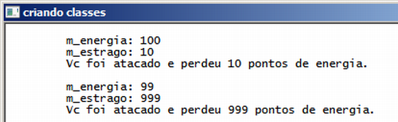
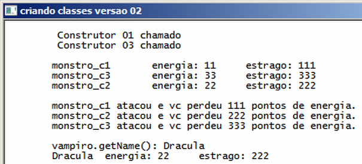

Curso completo de linguagem C++
Gameprog - Escola de programação de jogos digitais
Contato: gameprog.br@gmail.com
track07.html
07. Classes 1/5 - criando classes
7.1 Criandos classes

// criando_classes.cpp
// ilustra a criacao de classes
#include <iostream>
using namespace std;
// protótipo de nossas funções básicas
void inicio();
void fim();
// Vamos criar uma classe Monstro para criar objetos monstro
class Monstro
{
public:
int m_energia;
int m_estrago;
Monstro ()
{
m_energia = 100;
m_estrago = 10;
}
void atacar()
{
cout << "\t Vc foi atacado e perdeu " << m_estrago << " pontos de energia. \n\n";
}
}; // fim da classe monstro
int main() {
inicio();
int energia, estrago;
// Criando um objeto da classe monstro
Monstro godzila;
// Obtendo valores das propriedades do objeto monstro
energia = godzila.m_energia;
estrago = godzila.m_estrago;
cout << "\t m_energia: " << energia << "\n";
cout << "\t m_estrago: " << estrago << "\n";
// Vamos atacar
godzila.atacar();
// Reconfigurando e mostrando as propriedades
godzila.m_energia = 99;
godzila.m_estrago = 999;
cout << "\t m_energia: " << godzila.m_energia << "\n";
cout << "\t m_estrago: " << godzila.m_estrago << "\n";
godzila.atacar();
fim();
} // endmain
//************* funções ******************************************************
void inicio() {
system("color f0");
system("title criando classes");
cout << "\n";
} // endfunction: initsys()
void fim() {
cout << "\n"; system("pause");
} // endfunction: endsys()
No programa acima supomos que nossa necessidade é criar um jogo aonde vai haver
monstros. Como propriedade básica esses monstros vão ter energia ( m_energia)
que vai ser reduzida quando eles forem atacados pelo jogador. Esses monstros
vão ser capazes da ação de atacar e terão a capacidade de causar estrago no jogador
na extensão definida pela propriedade m_estrago. Então, esse é o contexto básico
de nossa aplicação.
Uma classe é criada dessa maneira:
class Monstro
{
// bloco de código que define e implementa as propriedades e métodos
};
Repare que deve haver um ponto e vírgula (;) no final da declaração da classe
tal como ocorre também com a declaração de estruturas ( struct ). No miolo
desse bloco você vai colocar no mínimo a definição das propriedades e dos métodos.
public:
int m_energia;
int m_estrago;
Com esta sintaxe acima vc define as propriedades da classe. A palavra chave
public define que as propriedades e métodos vão ser públicos, isto é, as
funções e propriedades vão poder ser acessadas e modificadas globalmente, dentro
de qualquer lugar do nosso programa. É recomendável prefixar as propriedades com
um m_ de membro.
void atacar() {
cout << "\t Vc foi atacado e perdeu " << m_estrago << " pontos de energia. \n\n"; }
Vc pode definir e implementar dentro do bloco da classe as suas funções membros
ou os métodos na terminologia de programação orientada a objetos.
Como os métodos são apenas funções dentro de uma classe vc pode aplicar tudo que
vc sabe sobre funções como sobrecarregá-los (overload), criar valores default,
retornar valores etc.
Monstro () {
m_energia = 100;
m_estrago = 10; }
As classes possuem alguns métodos especiais. O método acima é denominado construtor
e é chamado automaticamente na criação de um objeto. O construtor é usado para
realizar processos de inicialização de objetos tal como definir os valores iniciais
das propriedades.
O construtor deve ter o mesmo nome da classe e não deve ter valores de retorno
nem mesmo void.
7.1.1 Variações da sintaxe de criação de classes

// criando_classes_ver02.cpp
// ilustra a criacao de classes com sintaxe alternativa
#include <iostream>
#include <string>
using namespace std;
// protótipo de nossas funções básicas
void inicio();
void fim();
// Vamos criar uma classe Monstro para criar objetos monstro
class Monstro
{
private:
int m_energia;
int m_estrago;
string m_snome;
public:
Monstro ();
Monstro (int energia, int estrago);
Monstro (int energia, int estrago, string nome);
void atacar();
string getName();
void setName(string nome);
void info();
}; // endclass: Monstro
int main() {
inicio();
int energia, estrago;
// Criando um objeto da classe monstro
Monstro godzila;
Monstro vampiro = Monstro (22,222);
Monstro ogro = Monstro(33,333, "monstro_c3");
cout << "\n";
godzila.info();
ogro.info();
vampiro.info();
cout << "\n";
// Vamos atacar
godzila.atacar();
vampiro.atacar();
ogro.atacar();
vampiro.setName("Dracula");
cout << "\n\tvampiro.getName(): " << vampiro.getName() << "\n";
vampiro.info();
// int Mosntro::m_energia is private within this context
// vampiro.m_energia = 100;
fim();
} // endmain
//************* implementacao dos metodos ************************************
Monstro::Monstro() {
cout << "\t Construtor 01 chamado" << "\n";
m_energia = 11;
m_estrago = 111;
m_snome = "monstro_c1";
} // fim do construtor 01
Monstro::Monstro(int energia, int estrago): m_energia(energia), m_estrago(estrago),
m_snome("monstro_c2") {}
// fim do construtor 02
Monstro::Monstro(int energia, int estrago, string nome): m_energia(energia),
m_estrago(estrago), m_snome(nome) {
cout << "\t Construtor 03 chamado" << "\n";
} // fim do construtor 03
void Monstro::atacar() {
cout << "\t" << m_snome << " atacou e vc perdeu "
<< m_estrago << " pontos de energia. \n";
} // endmethod: atacar()
string Monstro::getName() { return m_snome; }
void Monstro::setName( string nome) { m_snome = nome; }
void Monstro::info() {
cout << "\t" << m_snome;
cout << "\t energia: " << m_energia;
cout << "\t estrago: " << m_estrago << "\n";
} // endmethod: info()
//************* funcoes ******************************************************
void inicio() {
system("color f0");
system("title criando classes versao 02");
cout << "\n";
} // endfunction: initsys()
void fim() {
cout << "\n"; system("pause");
} // endfunction: endsys()
private:
int m_energia;
int m_estrago;
string m_snome;
A instrução private determina que os membros da classe (propriedades e métodos)
serão particulares da classe e não poderão ser acessados fora dela. Por exemplo,
se vc tentar acessar m_energia tal como vampiro.m_energia = 100; o seu programa não
compila e gera o seguinte erro int Monstro::m_energia is private within this context
que bem traduzido fica int Monstro::m_energia é particular e portanto não pode ser
acessada nesse contexto (main()).
public:
Monstro ();
Monstro (int energia, int estrago);
Monstro (int energia, int estrago, string nome);
Aqui definimos que o construtor e os métodos serão públicos. Veja que
sobrecarregamos o construtor permitindo que um objeto da classe seja
criado e inicializado de diversas maneiras.
void atacar();
string getName();
void setName(string nome);
void info();
Os métodos normais são definidos como públicos e as propriedades privadas
serão acessadas indiretamente por esses métodos. Esse estilo de acesso
às propriedades é recomendado pelos melhores profissionais de programação,
e as funções que dão acesso e manipulam indiretamente as propriedades
são denominadas acessors em inglês, traduzindo ficaria como acessadoras.
Quando uma função acessadora configura uma propriedade ela é uma função
set (configurar) e quando ela obtém o valor de uma propriedade
é uma função get (obter).
void info(); // dentro do bloco da classe
void Monstro::info() {
// bloco de código }
Na classe vc define os protótipos dos métodos. Na implementação dos métodos fora
do bloco da classe vc deve prefixar o nome do método com o nome da classe usando
o operador de resolução de escopo ( :: ) denominado em inglês scope resolution
operator: tipo_retorno nome_da_classe::nome_do_método (tipo_dado, tipo_dado);.
// Monstro godzila;
Monstro::Monstro() {
cout << "\t Construtor 01 chamado" << "\n";
m_energia = 11;
m_estrago = 111;
m_snome = "monstro_c1"; } // fim do construtor 01
Nesse primeiro construtor inicializamos as propriedades e emitimos uma mensagem
via cout apenas para vc perceber que o construtor é chamado automaticamente na
construção de um objeto. Com esse construtor vc cria um objeto dessa maneira:
Monstro godzila;
Monstro::Monstro(int energia, int estrago): m_energia(energia), m_estrago(estrago),
m_snome("monstro_c2") {}
O código acima representa uma maneira sucinta de inicializar as propriedades pelo
construtor. É passado após a definição do construtor uma lista de inicialização
de propriedades na forma: construtor(v1, v2): p1(v1), p2(v2) {}. Repare que
fechamos as chaves sem a necessidade de adicionar outro código de inicialização.
Com esse construtor vc cria um objeto dessa maneira:
Monstro ogro = Monstro(33,333, "monstro_c3");
// Vamos atacar
godzila.atacar(); vampiro.atacar(); ogro.atacar();
Veja que você ganha facilidades e produtividade com o uso de classes e objetos.
Você poderia definir uma array de monstros e depois fazê-los atacar() de uma
só vez usando uma estrutura for:
Monstro bando[10];
for (int ncx = 0; ncx < 1; ncx++) bando[ncx].atacar();